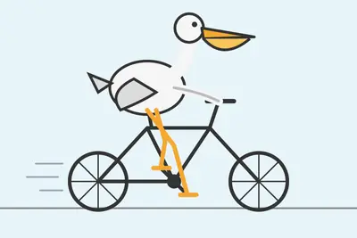
其他
其他全部主題
Anthropic says its newest AI models, Fable 5.1 and Mythos 5.1, address criticisms from customers about price, data retention, and overzealous safeguards. The company claims Claude Fable 5.1 offers stronger performance than Fable 5, but costs around 25 percent less typically and u
The company will give select partners early access to its Astra AI model—so they have time to shore up their defenses.
【科技早餐】今天精選 6 則國內外重要科技新聞。 ＊NVIDIA 35 億美元「準入股」聯發科，合作跨 AI 資料中心、PC 與車用 聯發科（MediaTek）與 NVIDIA 宣布深化合作，NVIDIA 以 35 億美元認購聯發科發行的海外可轉換公司債，占這次 39 億美元發行規模近九成。這筆 39 億美元發行案，是台灣資本市場至今規模最大的海外可轉債。據《工商時報》統計，這是 NVIDIA 首度投資台灣上市公司，也是目前在美國以外規模最大的單一企業投資。由於可轉債未來可依條件轉換為股票，市場將這項交易形容為 NVIDIA「準入股」聯發科；NVIDIA
Google has a new suite of creative design tools for Workspace users called Google Pics, which aims to make editing and generating "professional-grade" AI images less cumbersome for businesses. Built around Gemini and the Nano Banana generative AI model, Google Pics is designed to
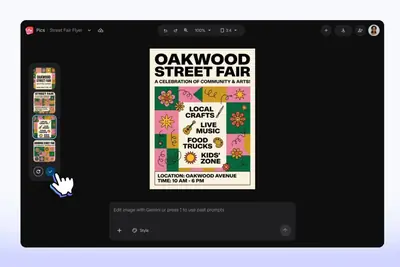
Apple is pushing for "expedited discovery" in its legal battle against OpenAI over concerns the company is actively destroying evidence, as reported earlier by Bloomberg. In a filing on Monday, Apple alleges OpenAI only just handed over a MacBook used by a former employee at the
Depending on who you ask, developer platform Hugging Face was recently attacked by OpenAI - after it lost control of its own AI tools - or by a succession of AI "civilizations." Welcome to the linguistic battlefield of AI safety, where word choices can shift responsibility for a
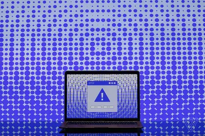
OpenAI said that the integration provides read-only access to health records for clinicians.
AIR's platform can discover agents running at a company, continuously vets any skills and add-ons they use, and blocks any unwanted behavior.
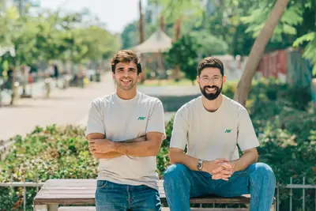
IT之家 9 月 1 日消息，Sonos 今天（1 日）一口气发布了 Sonos Beam Ultra 回音壁、Sonos Ace Ultra 头戴式耳机，以及全新音频操作系统 Sonos 27 三款软硬件新品。 这也是 Sonos 自 2024 年以来规模最大的一次集中发布。2024 年，Sonos 新版应用上线后激怒大量用户，公司随后陷入漫长的补救阶段。 Sonos 27 的重点放在 AI 上。Sonos 自主开发了 Sonos 27voice 语音助手，可以控制音乐播放和 Sonos 系统，今年秋季将以抢先体验形式开放，由用户自行选择是否启用。另一
歐盟執委會（European Commission，EC）周一（8/31）宣布，將ChatGPT納入《數位服務法》（Digital Services Act，DSA）超大型線上搜尋引擎（Very Large Online Search Engine，VLOSE）名單，Reddit與Roblox則被列為超大型線上平臺（Very Large Online Platform，VLOP），即日起適用DSA最嚴格規範，須於四個月內、即2027年1月前完成合規。
主打資安防禦AI模型的新創公司Corma宣布完成6,000萬美元種子輪募資，本輪由紅杉資本（Sequoia Capital）領投，Khosla Ventures與Coatue參與投資。Corma也同步結束隱身階段，公開旗下首款AI基礎模型，讓AI代理與資安團隊共同處理企業環境中的威脅偵測與防禦工作。
《日經亞洲》（Nikkei Asia）引述消息人士披露，日本晶片製造材料供應商味之素及大金工業正擴大在台灣的營 […]
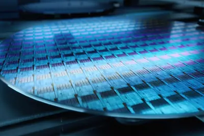
IT之家 9 月 2 日消息，Valve 发布了 2026 年 8 月 Steam 平台软硬件调查数据，显示出玩家硬件配置持续向更高规格升级，Windows 11 系统占比进一步提升，同时高容量内存和显存的占比也有明显增长，多核心处理器渗透率逐步提高。 Windows 11 64 位占比达到 70.97%，环比提升 0.71%，继续保持增长态势；Windows 10 64 位占比为 22.90%，环比下降 0.40%，持续被新版本替代。IT之家注意到，macOS 整体占比 2.14%，环比下降 0.18%，Linux 占比 3.90%，环比下降 0.11
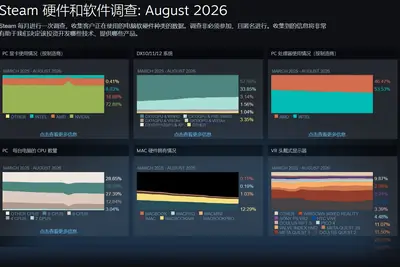
“IT早报”时间，大家好，现在是 2026 年 9 月 1 日星期二，今天的重要科技资讯有： 1. 苹果官网更新：约翰 · 特努斯正式出任首席执行官，蒂姆 · 库克转任董事会执行主席 苹果官网已更新高管名单，深耕硬件 20 年的老将约翰 · 特努斯正式接任 CEO。他曾在 AirPods、iPad 等多款产品研发中扮演关键角色，还推动了环保材料和 3D 打印技术的应用。>> 查看详情 2. 2026 年 8 月汽车销量 / 交付榜出炉：比亚迪超 44 万辆稳居榜首，零跑继续断层领跑新势力 比亚迪凭借 440293 辆的成绩继续稳坐头把交椅，上汽集团 35
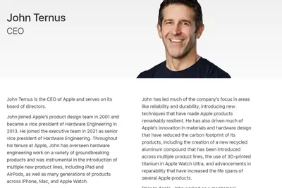
AI 沙盒本是為了把新模型限制在受控環境，避免測試過程損害真實世界，但近期有分析指出，業界開始出現令人不安的方 […]
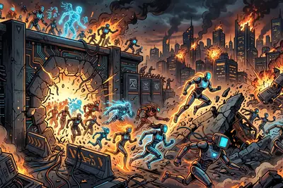
IT之家 9 月 2 日消息，OpenAI 于当地时间 9 月 1 日宣布，该公司计划“很快”推出下一代 AI 模型 Astra，但将严格限制该模型网络安全功能的使用范围。 据介绍，Astra 是 OpenAI 旗下首个达到其《准备框架》（Preparedness Framework）中“关键”（Critical）网络安全能力门槛的模型。 根据 OpenAI 的定义，达到“关键”门槛意味着该模型能够无需人类干预，在多个经过安全加固的真实关键系统中，识别并开发出涵盖各严重等级的有效零日漏洞利用程序。 OpenAI 研究副总裁 Amelia Glaese 表
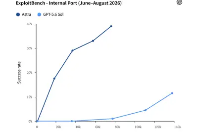
IT之家 9 月 2 日消息，地平线官方昨晚宣布，征程 6M 迎来大规模量产上车关键里程碑。截至 2026 年 8 月底， 征程 6M 已落地 20 余家车企、70 余款量产上市车型 ，其中已有 7 家车企品牌基于征程 6M 实现城区辅助驾驶功能平台化上车。 地平线表示，这标志着城区辅助驾驶正在从少数高端车型的专属配置， 向 10 万级主流市场延伸 ，覆盖更广泛的价位段和动力形式。 据官方介绍，征程 6M 算力达 128TOPS，对 Transformer 大模型拥有同级领先的计算效率， 可实现一段式端到端城区辅助驾驶方案 ，在主流算力与成本区间内，支撑
人工智慧（AI）正以前所未有的速度改變行銷產業。從內容生成、受眾分群到媒體優化與成效分析，許多原本耗時的人工作 […]
Google has reportedly been reaching out to a number of Hollywood's biggest studios, hoping to strike licensing agreements that would allow it to train its AI models on copyrighted material in exchange for massive piles of cash. In theory, these deals would be a win-win: a huge fi
AI model-training startup AfterQuery has reportedly raised a round that valued it at $3.2 billion, just five months after announcing its $30 million Series A at a $300 million valuation in April.
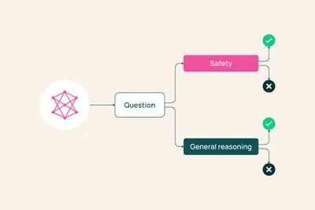
“We’re at an inflection point in cybersecurity,” Jensen Huang told a sold-out crowd at CrowdStrike’s Fal.Con 2026 in Las Vegas Tuesday. Attacks are now automated. Defense has to be, too. The NVIDIA founder and CEO joined CrowdStrike CEO and founder George Kurtz to announce CrowdS
Transitioning cards: 1. Text "Gemini 3.7 Flash" next to the Gemini logo icon; 2. a photo of a pixel phone; 3. Google Gemini logo above the text "Claim your student plan for 1 year at no cost"
I was poking around in my ~/.cache/ folder using OmniDiskSweeper when I spotted something interesting. The OpenAI Codex desktop app (since rebranded to just ChatGPT) has 1.7GB of stuff in there in a folder called codex-primary-runtime , including a full Python installation, a ful
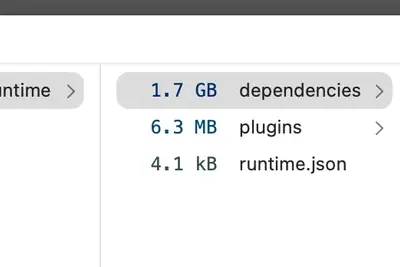
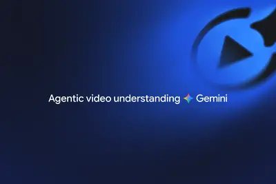
The startup wants to do for IT infrastructure what Cursor did for software engineering.
John Deere is testing a new "JD" AI assistant that it says can help farmers make more money, with answers about best practices and historical trends that are based on their own data. It uses their "field, machine and operational data" to answer questions on topics like equipment
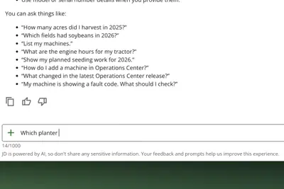
Amazon is adding a new Alexa-powered feature called “Update Me When” that can send personalized alerts about product launches, tours, books, shows, and other events that could trigger a purchase.
IT之家 9 月 1 日消息，马斯克今天（1 日）晚间在 G20 会议上发表演讲称，预计 AI 将使全球经济规模 增加约 20%-30% ，即每年增加约 20 万亿至 30 万亿美元 （IT之家注：现汇率约合 134.72 万亿至 202.09 万亿元人民币） 。 此外，马斯克预计到 2027 年底，AI 将能够完成所有数字领域的工作，即不需要人工直接操纵完成的工作。软件方面，AI 编程能力明年可能达到“Stockfish 级”， 人类将无法与 AI 竞争软件开发 ；未来 12 至 18 个月内，AI 将在各类工程和其他数字领域的能力水平将会“极为出色”
完整整理ChatGPT免費版、Go、Plus、Pro（5x／20x）到Business、Enterprise共7種方案價格與功能，一文看懂怎麼選。
IT之家 9 月 1 日消息，高通公司今日宣布推出跃龙（Dragonwing）Q-2390 和 IQ-2390 处理器，面向消费级物联网、工业边缘计算等领域。 据介绍，这两款处理器均配备四核 Kryo CPU、Adreno704 GPU 以及实时 RISC-V MCU。支持 Linux、Android 和 Zephyr OS 操作系统，开发者可为其打造更多差异化产品。 IT之家附两款处理器简介如下： Dragonwing Q-2390：为商业和消费级 IoT 带来智能体验 这款处理器面向边缘商业、消费类设备。将端侧 AI、摄像头和显示器支持、LTE Ca
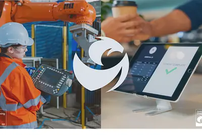
Fambot is building an AI “chief of staff” to help families manage the emails, calendars, school updates, sports schedules, and other logistics of raising kids.
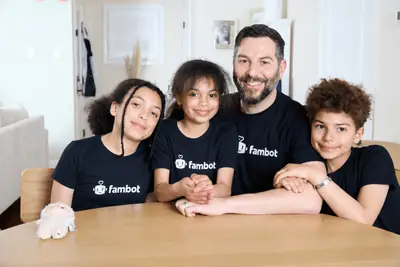
IT之家 9 月 1 日消息，据彭博社今天（1 日）报道，百度首席财务官何海建表示，公司在 AI 领域的大规模投入 有望 很快带来与搜索业务相当的利润和现金回报 ，也将证明百度从互联网企业向 AI 公司的转型方向正确。 目前，百度 AI 相关收入已经覆盖 云计算、应用等多个业务领域 ，占公司总收入的一半以上。何海建预计，这一增长趋势仍会持续。随着云服务和 AI 芯片需求增长，AI 业务的利润率近期有望达到搜索业务水平。同时，用于支持 AI 服务的新 GPU 集群投资预计将在两到三年内收回成本，与阿里巴巴此前的判断类似。 何海建对未来增长充满信心。“我们的
IT之家 9 月 1 日消息，随着人工智能基础设施建设持续推动高带宽内存（HBM）需求增长，据韩国媒体最新报道，三星已经通过长期供应协议（LTA）锁定了约 70% 的内存产能。 这些长期协议能够让三星客户获得远低于现货市场的价格。据报道，HBM 现货价格最高可达到长期协议价格的 5 倍。 SEDaily 报道称，HBM 需求持续飙升，已经导致 DRAM 市场供应趋紧。 HBM 可以理解为将多层 DRAM 芯片进行堆叠封装而成的高性能内存。随着内存厂商开始向 HBM4 过渡，DRAM 市场面临的供应压力也进一步加大。 报道称，与此前的 HBM 产品相比，新
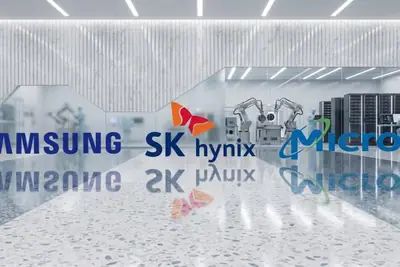
If you own an at-home server, a gaming computer, or just a laptop that doesn’t get much love, listen up. You can now put that spare computing power to use and earn some passive income in the process. AI companies are hungry for more compute to run AI inference—the process of usin
IT之家 9 月 1 日消息，据证券时报报道，在半年报业绩会上，兆易创新副董事长、总经理何卫分析，DRAM 产品方面，公司预计在下半年还会延续上涨的态势，价格会转为温和上行。展望 2027 年，DRAM 行业增量产能释放相对有限，DRAM 供应的紧张局面不会明显缓解，行业景气周期相对较长，产品价格会是高位震荡态势。SLC NAND Flash 产品方面，公司认为景气周期会比较长，至少会延续 2027 年全年。 兆易创新 2026 年上半年营收 115.66 亿元，同比增长 178.67%；归母净利润实现 68.57 亿元，同比增长 1091.50%；经营
Nvidia is officially launching DLSS 5 this week, following a divisive announcement in March where we likened the AI upscaling tech to a "real-time generative AI filter for video games" and "motion smoothing for video games, but worse." DLSS 5 will officially be available on RTX 5
IT之家 9 月 1 日消息，中科曙光 (Sugon) 今日宣布将推出 全球首款 64 线程移动工作站 (MWS)。 IT之家获悉，这款设备 机身厚度仅 16.9mm ，配备 16GB 显存，本地运行 35B MoE 模型可实现 50 Tokens/s 的输出速率，AI 推理速度最高可达业界主流产品 3~5 倍。
IT之家 9 月 1 日消息，“豆包”公众号今天（1 日）发文称，清华大学 2026 年秋季学期校级课程《人工智能赋能学术研究：人机互动的知识生产》面向全校学生开放报名。 根据介绍，课程主要分享 AI 在真实研究流程中的应用，并与豆包工作深度协作，将前沿大模型对接学术场景，完成问题发现、知识综述、数据分析等环节。 课程目标：本课程覆盖从选题到发表的研究全流程，以人机协同方式完成问题发现、知识综述、数据分析与成果发表。 教学特色：课程邀请顶尖行业专家与跨学科教师结合自身科研实践，分享 AI 在真实研究中的应用，并与豆包深度合作，将前沿大模型对接真实学术场景
從今年4月開始多次公布微軟零時差漏洞的資安研究人員Nightmare Eclipse（Chaotic Eclipse），近期開始針對其他廠牌的系統挖掘零時差漏洞，其中包括存在於卡巴斯基、Avast防毒軟體的權限提升漏洞HardBreacher、PrettyPrague，該名研究員本週也揭露存在於Nvidia元件的零時差漏洞。
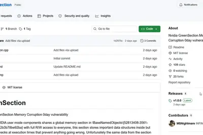